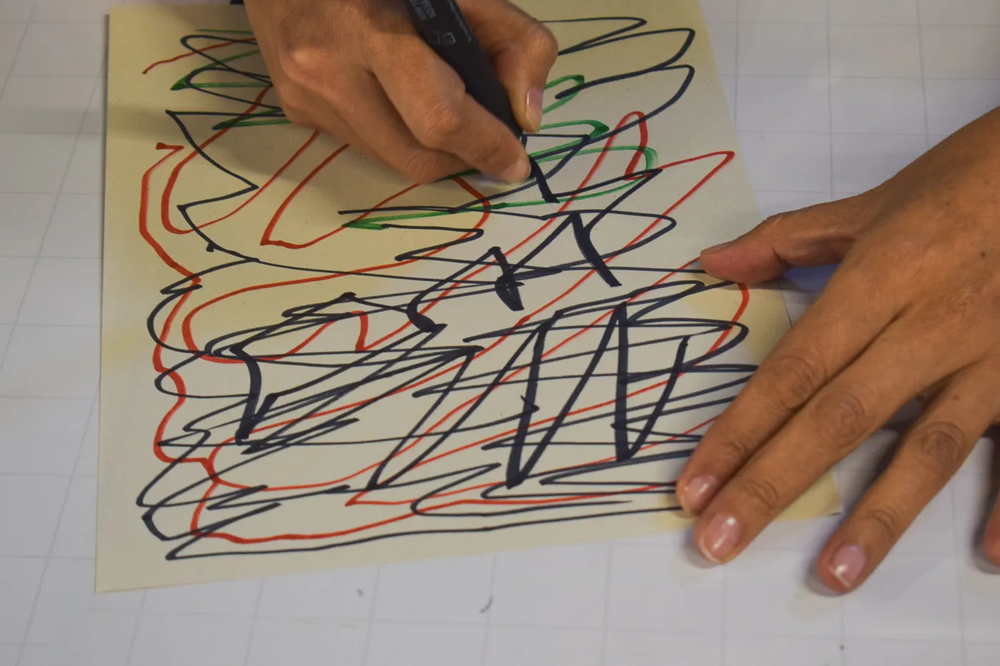
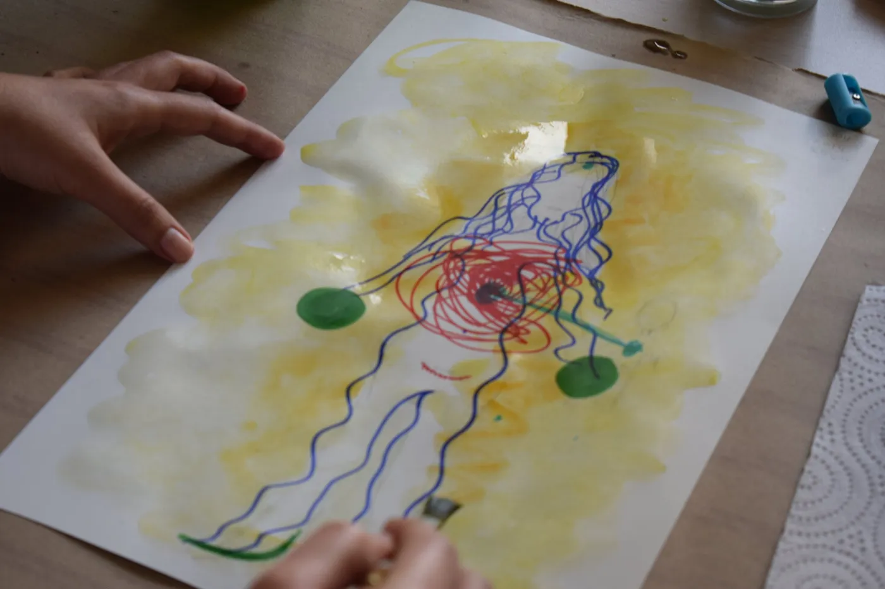
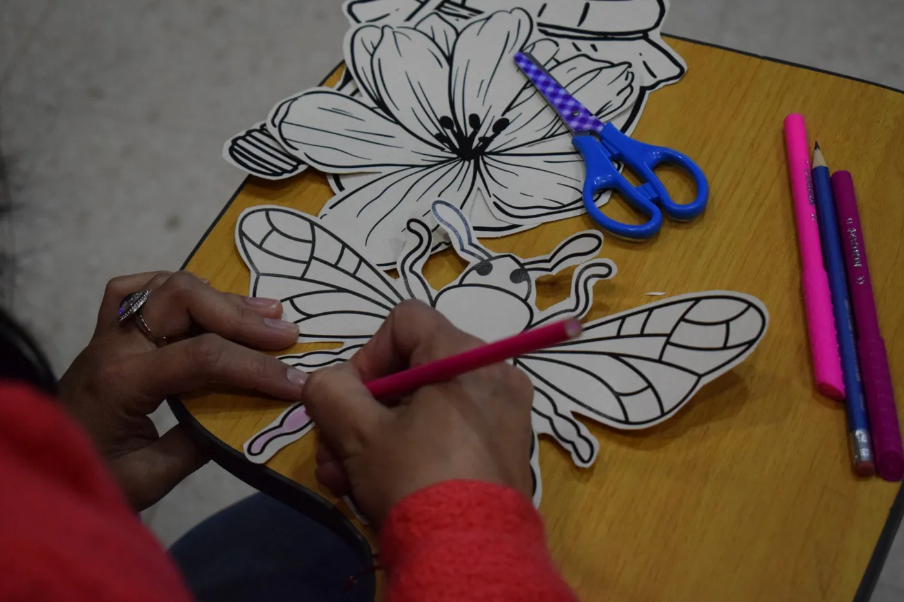
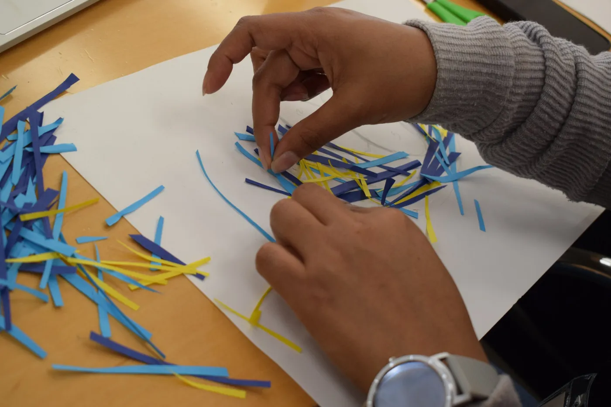

1 · Vaciado
El espejo de barro
Con papel, arcilla o trazo sacas afuera lo que pesa: el estrés, la niebla, la rutina. Dejamos que hable la parte del cuerpo que está tensa.
 ← Volver al inicio
← Volver al inicio
Mentoría 1:1 · El Despertar Interior
¿Sientes que el mundo se ha vuelto denso y has perdido tu norte? Hay momentos en que el cansancio nubla la visión de quién eres. Si hoy no encuentras el camino, quiero decirte algo: tú puedes ser tu propio lugar seguro.
$1.250.000 el proceso de 6 sesiones · Sesión de 90 min: $250.000

No es una charla de desahogo
El Despertar Interior es una mentoría para profesionales que quieren superar sus bloqueos, comunicarse mejor y gestionar sus emociones. Revisamos los patrones que aprendiste en tu historia y diseñamos un plan a tu medida.
Cada sesión · 90 minutos

Con papel, arcilla o trazo sacas afuera lo que pesa: el estrés, la niebla, la rutina. Dejamos que hable la parte del cuerpo que está tensa.

Con conversación y visualización reorganizamos tus prioridades y desmontamos las expectativas que no son tuyas.

No te vas con tareas que te abrumen: te llevas un pequeño ritual y un permiso para sostener lo que despertó.
El proceso completo

Este espacio es para ti si…
Lo que te llevas
Tu proceso
Escríbeme y agendamos tu primera sesión. Antes de empezar te comparto el Diagnóstico Profundo.
Valores antes de IVA. Si necesitas factura se suma el 19 %.